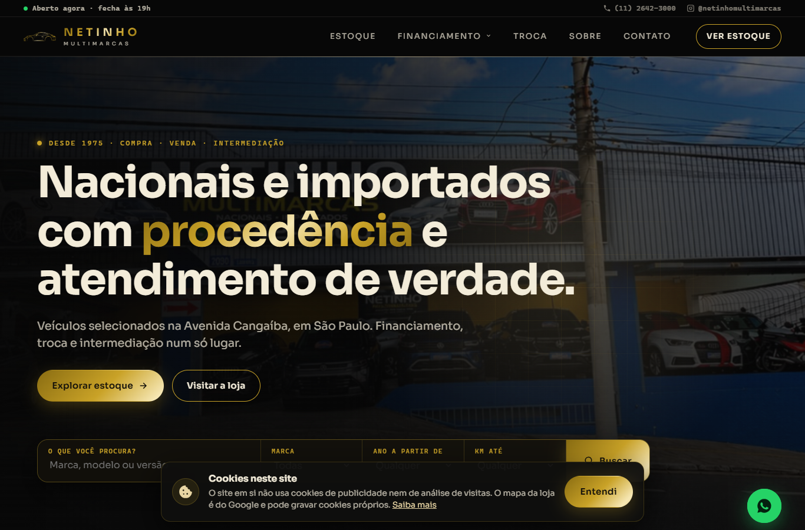

Sistema de Investigação de Marca e Identidade Online
https://netinhomultimarcas.com.br/
Prioridade: MEDIUM · Cenário: B_AMBIGUOUS_COMMUNICATION · Revisão humana: PENDING
Trata-se do site da loja de veículos Netinho Multimarcas (dentro do escopo de potenciais COBANs). Embora o estabelecimento utilize identidade visual própria e não se passe por canal oficial do Banco BV, faz uso do logotipo da instituição (E-IMG-1) na seção de bancos parceiros e oferta simulação/financiamento de veículos (E-TXT-002, E-TXT-006) sem informar seu CNPJ, razão social ou declaração de correspondente bancário (E-FTR, E-DISC-001), configurando comunicação ambígua/falha de transparência à luz da Resolução CMN nº 4.935/2021. [Revisor: CONFIRM] A hipótese do analista se sustenta integralmente. O domínio pertence a uma loja multimarcas de veículos (E-URL, E-TITLE) que oferta financiamento e simulação com bancos parceiros (E-TXT-002, E-TXT-006, E-TXT-011) e exibe o logotipo do Banco BV (E-IMG-1, E-DISC-001), mas omite razão social, CNPJ, declaração de condição de correspondente bancário e canal de ouvidoria no rodapé e na página (E-FTR, E-DISC-001), exigindo revisão conforme a Resolução CMN nº 4.935/2021.

| Ref | Tipo | Local | Conteúdo |
|---|---|---|---|
| E-URL | domain | url | URL final: https://www.netinhomultimarcas.com.br/ (domínio: www.netinhomultimarcas.com.br) |
| E-REDIR | network | url | Cadeia de redirecionamento: https://netinhomultimarcas.com.br/ -> https://www.netinhomultimarcas.com.br/ |
| E-COLLECT | network | collection | Status da coleta: OK; HTTP 200; ocorrências: network did not become idle (continuing) |
| E-DISC-001 | text | search_index | Índice de busca (grounding): netinhomultimarcas.com.br — **URL:** `https://netinhomultimarcas.com.br` | **Uso da Marca e Recursos:** Loja de veículos nacionais e importados que destaca o **Banco BV** na seção *"Trabalhamos com os principais bancos"* | **Conformidade (CNPJ / Razão Social / Declaração):** Não exibe declaração de correspondente bancário nem informa a Razão Social e o CNPJ no termo de autorização de envio de dados |
| E-SHOT-VIEWPORT | screenshot | viewport | evidence\C5834beb4c0\attempt-1\viewport.png (sha256 087d645e7aee83b2…) |
| E-SHOT-FULL | screenshot | page | evidence\C5834beb4c0\attempt-1\fullpage.png (sha256 f88cf6ffdf0a6005…) |
| E-TITLE | title | head | Netinho Multimarcas | Nacionais e importados desde 1975 |
| E-META-1 | meta | head | description: Netinho Multimarcas: compra, venda e intermediação de veículos em São Paulo desde 1975. |
| E-META-2 | meta | head | og:site_name: Netinho Multimarcas |
| E-META-3 | meta | head | og:title: Netinho Multimarcas | Nacionais e importados desde 1975 |
| E-META-4 | meta | head | og:description: Compra, venda e intermediação de veículos em São Paulo desde 1975. Veja o estoque e fale com a loja pelo WhatsApp. |
| E-HEAD-1 | heading | page | Nacionais e importados com procedência e atendimento de verdade. |
| E-HEAD-2 | heading | page | MERCEDES-BENZ CLA 250 |
| E-HEAD-3 | heading | page | Veículos selecionados para você |
| E-HEAD-4 | heading | page | Classe C |
| E-HEAD-5 | heading | page | Commander |
| E-HEAD-6 | heading | page | A1 |
| E-HEAD-7 | heading | page | Kait |
| E-HEAD-8 | heading | page | Novos no estoque |
| E-HEAD-9 | heading | page | CLA 250 |
| E-HEAD-10 | heading | page | Kait |
| E-HEAD-11 | heading | page | Strada |
| E-HEAD-12 | heading | page | T-Cross |
| E-HEAD-13 | heading | page | Tudo para fechar negócio com segurança |
| E-HEAD-14 | heading | page | Comprar |
| E-HEAD-15 | heading | page | Trocar |
| E-HDR | text | header | Aberto agora · fecha às 19h (11) 2642-3000 @netinhomultimarcas NETINHO MULTIMARCAS ESTOQUE FINANCIAMENTO TROCA SOBRE CONTATO VER ESTOQUE |
| E-FOLD | text | viewport (acima da dobra) | Aberto agora · fecha às 19h (11) 2642-3000 @ netinhomultimarcas NETINHO MULTIMARCAS Estoque Financiamento Troca Sobre Contato Ver estoque Desde 1975 · Compra · Venda · Intermediação Nacionais e importados com procedência e atendimento de verdade. Veículos selecionados na Avenida Cangaíba, em São Paulo. Financiamento, troca e intermediação num só lugar. Explorar estoque Visitar a loja O que você procura? Marca Ano a partir de Km até Buscar Cookies neste site O site em si não usa cookies de publicidade nem de análise de visitas. O mapa da loja é do Google e pode gravar cookies próprios. Saiba mais Entendi |
| E-FTR | text | footer | NETINHO MULTIMARCAS Compra · Venda · Intermediação. Nacionais e importados desde 1975. Estoque Financiamento Troca Sobre Contato ABERTO AGORA · FECHA ÀS 19H Av. Cangaíba, 2030 · Cangaíba · São Paulo · SP Segunda a sexta 9h às 19h · Sábado 9h às 16h Feriados: 9h às 13h Horários sujeitos a alteração em feriados e datas comemorativas. Na dúvida, confirme pelo WhatsApp. Política de privacidade © 2026 Netinho Multimarcas. Todos os direitos reservados. Desenvolvido por @alavanzi |
| E-NAV | nav | header | (11) 2642-3000 <tel:+551126423000> | @netinhomultimarcas <https://www.instagram.com/netinhomultimarcas/> | NETINHO MULTIMARCAS <https://www.netinhomultimarcas.com.br/> | ESTOQUE <https://www.netinhomultimarcas.com.br/estoque> | FINANCIAMENTO <https://www.netinhomultimarcas.com.br/financiamento> | TROCA <https://www.netinhomultimarcas.com.br/troca> | SOBRE <https://www.netinhomultimarcas.com.br/sobre> | CONTATO <https://www.netinhomultimarcas.com.br/contato> | VER ESTOQUE <https://www.netinhomultimarcas.com.br/estoque> |
| E-CTA-1 | cta | header | NETINHO MULTIMARCAS <https://www.netinhomultimarcas.com.br/> |
| E-CTA-2 | cta | header | VER ESTOQUE <https://www.netinhomultimarcas.com.br/estoque> |
| E-CTA-3 | cta | page | Explorar estoque <https://www.netinhomultimarcas.com.br/estoque> |
| E-CTA-4 | cta | page | Visitar a loja <https://www.netinhomultimarcas.com.br/contato> |
| E-CTA-5 | cta | page | Buscar |
| E-CTA-6 | cta | page | Mais detalhes <https://www.netinhomultimarcas.com.br/veiculo/mercedes-benz-cla-250-sport-2-0-turbo-4x4-2015-a01> |
| E-CTA-7 | cta | page | WhatsApp sobre Mercedes-Benz CLA 250 (abre em nova aba) <https://wa.me/5511955582460?text=Ol%C3%A1%2C%20Netinho%20Multimarcas!%20Visitei%20o%20site%20e%20tenho%20interesse%20neste%20ve%C3%ADculo%3A%0A%0AMercedes-Benz%20CLA%20250%20Sport%202.0%20Turbo%204x4%202015%0Ahttps%3A%2F%2Fwww.netinhomultimarcas.com.br%2Fveiculo%2Fmercedes-benz-cla-250-sport-2-0-turbo-4x4-2015-a01%0A%0APode%20me%20passar%20mais%20informa%C3%A7%C3%B5es%20sobre%20ele%3F> |
| E-CTA-8 | cta | page | Foto anterior: Mercedes-Benz Classe C |
| E-CTA-9 | cta | page | MAIS DETALHES <https://www.netinhomultimarcas.com.br/veiculo/mercedes-benz-classe-c-c250-2-0-turbo-2018-a02> |
| E-CTA-10 | cta | page | FINANCIAMENTO |
| E-CTA-11 | cta | page | Foto anterior: Jeep Commander |
| E-CTA-12 | cta | page | MAIS DETALHES <https://www.netinhomultimarcas.com.br/veiculo/jeep-commander-limited-1-3-turbo-2023-a03> |
| E-CTA-13 | cta | page | FINANCIAMENTO |
| E-CTA-14 | cta | page | Foto anterior: Audi A1 |
| E-CTA-15 | cta | page | MAIS DETALHES <https://www.netinhomultimarcas.com.br/veiculo/audi-a1-sportback-1-4-tfsi-2016-a10> |
| E-CTA-16 | cta | page | FINANCIAMENTO |
| E-CTA-17 | cta | page | Foto anterior: Nissan Kait |
| E-CTA-18 | cta | page | MAIS DETALHES <https://www.netinhomultimarcas.com.br/veiculo/nissan-kait-sense-1-6-2026-a05> |
| E-CTA-19 | cta | page | FINANCIAMENTO |
| E-CTA-20 | cta | page | Ver todo o estoque <https://www.netinhomultimarcas.com.br/estoque> |
| E-CONTACT-1 | contact | header | (11) 2642-3000 <tel:+551126423000> |
| E-CONTACT-2 | contact | header | @netinhomultimarcas <https://www.instagram.com/netinhomultimarcas/> |
| E-CONTACT-3 | contact | page | WhatsApp sobre Mercedes-Benz CLA 250 (abre em nova aba) <https://wa.me/5511955582460?text=Ol%C3%A1%2C%20Netinho%20Multimarcas!%20Visitei%20o%20site%20e%20tenho%20interesse%20neste%20ve%C3%ADculo%3A%0A%0AMercedes-Benz%20CLA%20250%20Sport%202.0%20Turbo%204x4%202015%0Ahttps%3A%2F%2Fwww.netinhomultimarcas.com.br%2Fveiculo%2Fmercedes-benz-cla-250-sport-2-0-turbo-4x4-2015-a01%0A%0APode%20me%20passar%20mais%20informa%C3%A7%C3%B5es%20sobre%20ele%3F> |
| E-CONTACT-4 | contact | page | Chamar no WhatsApp sobre Mercedes-Benz Classe C <https://wa.me/5511955582460?text=Ol%C3%A1%2C%20Netinho%20Multimarcas!%20Visitei%20o%20site%20e%20tenho%20interesse%20neste%20ve%C3%ADculo%3A%0A%0AMercedes-Benz%20Classe%20C%20C250%202.0%20Turbo%202018%0Ahttps%3A%2F%2Fwww.netinhomultimarcas.com.br%2Fveiculo%2Fmercedes-benz-classe-c-c250-2-0-turbo-2018-a02%0A%0APode%20me%20passar%20mais%20informa%C3%A7%C3%B5es%20sobre%20ele%3F> |
| E-CONTACT-5 | contact | page | Chamar no WhatsApp sobre Jeep Commander <https://wa.me/5511955582460?text=Ol%C3%A1%2C%20Netinho%20Multimarcas!%20Visitei%20o%20site%20e%20tenho%20interesse%20neste%20ve%C3%ADculo%3A%0A%0AJeep%20Commander%20Limited%201.3%20Turbo%202023%0Ahttps%3A%2F%2Fwww.netinhomultimarcas.com.br%2Fveiculo%2Fjeep-commander-limited-1-3-turbo-2023-a03%0A%0APode%20me%20passar%20mais%20informa%C3%A7%C3%B5es%20sobre%20ele%3F> |
| E-CONTACT-6 | contact | page | Chamar no WhatsApp sobre Audi A1 <https://wa.me/5511955582460?text=Ol%C3%A1%2C%20Netinho%20Multimarcas!%20Visitei%20o%20site%20e%20tenho%20interesse%20neste%20ve%C3%ADculo%3A%0A%0AAudi%20A1%20Sportback%201.4%20TFSI%202016%0Ahttps%3A%2F%2Fwww.netinhomultimarcas.com.br%2Fveiculo%2Faudi-a1-sportback-1-4-tfsi-2016-a10%0A%0APode%20me%20passar%20mais%20informa%C3%A7%C3%B5es%20sobre%20ele%3F> |
| E-CONTACT-7 | contact | page | Chamar no WhatsApp sobre Nissan Kait <https://wa.me/5511955582460?text=Ol%C3%A1%2C%20Netinho%20Multimarcas!%20Visitei%20o%20site%20e%20tenho%20interesse%20neste%20ve%C3%ADculo%3A%0A%0ANissan%20Kait%20Sense%201.6%202026%0Ahttps%3A%2F%2Fwww.netinhomultimarcas.com.br%2Fveiculo%2Fnissan-kait-sense-1-6-2026-a05%0A%0APode%20me%20passar%20mais%20informa%C3%A7%C3%B5es%20sobre%20ele%3F> |
| E-CONTACT-8 | contact | page | Chamar no WhatsApp sobre Mercedes-Benz CLA 250 <https://wa.me/5511955582460?text=Ol%C3%A1%2C%20Netinho%20Multimarcas!%20Visitei%20o%20site%20e%20tenho%20interesse%20neste%20ve%C3%ADculo%3A%0A%0AMercedes-Benz%20CLA%20250%20Sport%202.0%20Turbo%204x4%202015%0Ahttps%3A%2F%2Fwww.netinhomultimarcas.com.br%2Fveiculo%2Fmercedes-benz-cla-250-sport-2-0-turbo-4x4-2015-a01%0A%0APode%20me%20passar%20mais%20informa%C3%A7%C3%B5es%20sobre%20ele%3F> |
| E-CONTACT-9 | contact | page | Chamar no WhatsApp sobre Nissan Kait <https://wa.me/5511955582460?text=Ol%C3%A1%2C%20Netinho%20Multimarcas!%20Visitei%20o%20site%20e%20tenho%20interesse%20neste%20ve%C3%ADculo%3A%0A%0ANissan%20Kait%20Sense%201.6%202026%0Ahttps%3A%2F%2Fwww.netinhomultimarcas.com.br%2Fveiculo%2Fnissan-kait-sense-1-6-2026-a05%0A%0APode%20me%20passar%20mais%20informa%C3%A7%C3%B5es%20sobre%20ele%3F> |
| E-CONTACT-10 | contact | page | Chamar no WhatsApp sobre Fiat Strada <https://wa.me/5511955582460?text=Ol%C3%A1%2C%20Netinho%20Multimarcas!%20Visitei%20o%20site%20e%20tenho%20interesse%20neste%20ve%C3%ADculo%3A%0A%0AFiat%20Strada%20Endurance%201.4%202026%0Ahttps%3A%2F%2Fwww.netinhomultimarcas.com.br%2Fveiculo%2Ffiat-strada-endurance-1-4-2026-a06%0A%0APode%20me%20passar%20mais%20informa%C3%A7%C3%B5es%20sobre%20ele%3F> |
| E-CONTACT-11 | contact | page | Chamar no WhatsApp sobre Volkswagen T-Cross <https://wa.me/5511955582460?text=Ol%C3%A1%2C%20Netinho%20Multimarcas!%20Visitei%20o%20site%20e%20tenho%20interesse%20neste%20ve%C3%ADculo%3A%0A%0AVolkswagen%20T-Cross%201.0%20Turbo%20Flex%202025%0Ahttps%3A%2F%2Fwww.netinhomultimarcas.com.br%2Fveiculo%2Fvolkswagen-t-cross-1-0-turbo-flex-2025-a07%0A%0APode%20me%20passar%20mais%20informa%C3%A7%C3%B5es%20sobre%20ele%3F> |
| E-CONTACT-12 | contact | page | Ligar para a loja, (11) 2642-3000 <tel:+551126423000> |
| E-CONTACT-13 | contact | page | Instagram @netinhomultimarcas SEGUIR E VER OS CARROS (ABRE EM NOVA ABA) <https://www.instagram.com/netinhomultimarcas/> |
| E-CONTACT-14 | contact | page | Facebook Netinho Multimarcas VISITAR A PÁGINA (ABRE EM NOVA ABA) <https://www.facebook.com/netinhomultimarcas> |
| E-CONTACT-15 | contact | footer | WhatsApp (11) 95558-2460 (abre em nova aba) <https://wa.me/5511955582460?text=Ol%C3%A1%2C%20Netinho%20Multimarcas!%20Visitei%20o%20site%20e%20gostaria%20de%20mais%20informa%C3%A7%C3%B5es.%0A%0APodem%20me%20atender%3F> |
| E-CONTACT-16 | contact | footer | Ligar para (11) 2642-3000 <tel:+551126423000> |
| E-CONTACT-17 | contact | footer | Instagram @netinhomultimarcas (abre em nova aba) <https://www.instagram.com/netinhomultimarcas/> |
| E-CONTACT-18 | contact | footer | Facebook (abre em nova aba) <https://www.facebook.com/netinhomultimarcas> |
| E-CONTACT-19 | contact | footer | @alavanzi <https://www.instagram.com/alavanzi/> |
| E-CONTACT-20 | contact | page | Fale conosco <https://wa.me/5511955582460?text=Ol%C3%A1%2C%20Netinho%20Multimarcas!%20Visitei%20o%20site%20e%20gostaria%20de%20mais%20informa%C3%A7%C3%B5es.%0A%0APodem%20me%20atender%3F> |
| E-IMG-1 | image | page | imagem alt='Banco BV' src=https://www.netinhomultimarcas.com.br/bancos/bv.png (77x56, abaixo da dobra) |
| E-TXT-001 | text | page | Nacionais e importados com procedência e atendimento de verdade. |
| E-TXT-002 | text | page | Financiamento com bancos parceiros |
| E-TXT-003 | text | page | |
| E-TXT-004 | text | page | Cada veículo com ficha completa, fotos e atendimento direto pelo WhatsApp. |
| E-TXT-005 | text | page | Avaliação do seu veículo pelo WhatsApp. |
| E-TXT-006 | text | page | Simulação com os bancos parceiros. |
| E-TXT-007 | text | page | Trabalhamos com os principais bancos parceiros. |
| E-TXT-008 | text | page | Avaliamos o seu veículo na troca, direto pelo WhatsApp. |
| E-TXT-009 | text | page | Recomendo a Netinho Multimarcas , primeiramente pelo excelente atendimento e atenção do Gabriel e seu pai ,um senhorzinho muito simpático e sorridente e,ainda com veículos a venda escolhidos a dedo para satisfação total de minhas expectativas,dando toda atenção pós venda ,fiquei muito feliz com o atendimento !!! |
| E-TXT-010 | text | page | Muito boa . Atendimento ótimo e transparência no negócio. |
| E-TXT-011 | text | page | Trabalhamos com os principais bancos |
| E-TXT-012 | text | page | Horários sujeitos a alteração em feriados e datas comemorativas. Na dúvida, confirme pelo WhatsApp. |
| E-TXT-013 | text | page | Horários sujeitos a alteração em feriados e datas comemorativas. Na dúvida, confirme pelo WhatsApp. |
| Dimensão | Sinal | Achado | Refs |
|---|---|---|---|
| VISUAL_IDENTITY | LEGITIMATE | O site utiliza identidade visual própria da loja Netinho Multimarcas (tons escuros e dourados), sem imitar a identidade visual do Banco BV. | E-SHOT-VIEWPORT E-SHOT-FULL |
| DECLARED_COMMERCIAL_IDENTITY | CONFUSION | Apresenta o nome fantasia 'Netinho Multimarcas' e endereço físico em São Paulo/SP, mas omite a razão social e o CNPJ do estabelecimento. | E-TITLE E-FTR E-DISC-001 |
| CORRESPONDENT_TRANSPARENCY | CONFUSION | Oferta financiamento e simulação utilizando a marca do Banco BV sem exibir aviso visível de correspondente bancário ou dados de ouvidoria da instituição financeira. | E-TXT-002 E-TXT-006 E-FTR E-DISC-001 |
| INSTITUTIONAL_LANGUAGE | LEGITIMATE | A comunicação é feita em nome da loja de veículos, referindo-se às instituições financeiras como 'bancos parceiros', sem reivindicar ser canal oficial do banco. | E-TXT-002 E-TXT-006 E-TXT-007 |
| LOGO_USAGE | CONFUSION | Presença de arquivo de imagem com o logotipo do Banco BV (bancos/bv.png) vinculado à seção 'Trabalhamos com os principais bancos'. | E-IMG-1 E-TXT-011 E-DISC-001 |
| SERVICE_JOURNEY | CONFUSION | Disponibiliza jornada e seção de financiamento e simulação de veículos sem as informações obrigatórias de transparência de correspondente bancário. | E-NAV E-CTA-10 E-TXT-006 E-DISC-001 |
| CONTACT_CHANNELS | LEGITIMATE | Os canais de contato (telefone fixo, WhatsApp e redes sociais) estão claramente identificados como pertencentes à loja Netinho Multimarcas. | E-CONTACT-1 E-CONTACT-3 E-CONTACT-15 |
| CONSUMER_CONFUSION | NEUTRAL | Não há tentativa de se passar pelo Banco BV, tratando-se de revenda multimarcas, porém há falhas formais de transparência na divulgação da parceria de financiamento. | E-SHOT-VIEWPORT E-DISC-001 |
Trata-se do site da loja de veículos Netinho Multimarcas (dentro do escopo de potenciais COBANs). Embora o estabelecimento utilize identidade visual própria e não se passe por canal oficial do Banco BV, faz uso do logotipo da instituição (E-IMG-1) na seção de bancos parceiros e oferta simulação/financiamento de veículos (E-TXT-002, E-TXT-006) sem informar seu CNPJ, razão social ou declaração de correspondente bancário (E-FTR, E-DISC-001), configurando comunicação ambígua/falha de transparência à luz da Resolução CMN nº 4.935/2021.
Nenhum CNPJ ou razão social identificáveis no conteúdo coletado.
| Tipo | Valor | Ref | Contexto |
|---|---|---|---|
| domain | netinhomultimarcas.com.br | E-URL | |
| social_profile | https://www.instagram.com/netinhomultimarcas/ | E-NAV | |
| social_profile | https://www.facebook.com/netinhomultimarcas | E-CONTACT-14 | |
| social_profile | https://www.instagram.com/alavanzi/ | E-CONTACT-19 | |
| trade_name | Netinho Multimarcas | E-META-2 | |
| phone | (11) 2642-3000 | E-HDR | |
| phone | (11) 95558-2460 | E-CONTACT-15 | |
| WhatsApp sobre Mercedes-Benz CLA 250 (abre em nova aba) <https://wa.me/5511955582460?text=Ol%C3%A1%2C%20Netinho%20Multimarcas!%20Visitei%20o%20site%20e%20tenho%20interesse%20neste%20ve%C3%ADculo%3A%0A | E-CONTACT-3 | ||
| Chamar no WhatsApp sobre Mercedes-Benz Classe C <https://wa.me/5511955582460?text=Ol%C3%A1%2C%20Netinho%20Multimarcas!%20Visitei%20o%20site%20e%20tenho%20interesse%20neste%20ve%C3%ADculo%3A%0A%0AMerce | E-CONTACT-4 | ||
| Chamar no WhatsApp sobre Jeep Commander <https://wa.me/5511955582460?text=Ol%C3%A1%2C%20Netinho%20Multimarcas!%20Visitei%20o%20site%20e%20tenho%20interesse%20neste%20ve%C3%ADculo%3A%0A%0AJeep%20Comman | E-CONTACT-5 | ||
| Chamar no WhatsApp sobre Audi A1 <https://wa.me/5511955582460?text=Ol%C3%A1%2C%20Netinho%20Multimarcas!%20Visitei%20o%20site%20e%20tenho%20interesse%20neste%20ve%C3%ADculo%3A%0A%0AAudi%20A1%20Sportbac | E-CONTACT-6 | ||
| Chamar no WhatsApp sobre Nissan Kait <https://wa.me/5511955582460?text=Ol%C3%A1%2C%20Netinho%20Multimarcas!%20Visitei%20o%20site%20e%20tenho%20interesse%20neste%20ve%C3%ADculo%3A%0A%0ANissan%20Kait%20 | E-CONTACT-7 |
Mapeamento indicativo para apoio à auditoria. Não constitui conclusão regulatória; a decisão definitiva pertence à auditoria.
Fonte: NORMATIVE
Art. 14. O contrato de correspondente deve estabelecer: [...] II - vedação à utilização, pelo contratado, de logomarca ou de outros atributos que sejam similares aos adotados pela instituição contratante em suas agências, postos de atendimento, sítio eletrônico na internet, aplicativo ou outras plataformas de comunicação em rede;
Hipótese: Uso de logomarca ou de atributos similares aos adotados pela contratante em seus canais. A norma disciplina correspondentes contratados; o responsável não foi identificado como correspondente.
Evidência observada: E-DISC-001 E-IMG-1 E-TXT-011
Informação faltante:
Fonte: NORMATIVE
Art. 14. O contrato de correspondente deve estabelecer: [...] III - divulgação ao público, pelo contratado, de sua condição de prestador de serviços à instituição contratante, identificada pelo nome com que é conhecida no mercado, com descrição dos produtos e serviços oferecidos e canais de contato da instituição contratante, inclusive de sua ouvidoria, em local visível, em destaque e em formato legível, por meio de: a) sítio eletrônico do correspondente na internet, acessível na página inicial; b) aplicativo e outras plataformas de comunicação em rede do correspondente; [...]
Hipótese: Divulgação ao público da condição de prestador de serviços à contratante ausente, insuficiente ou sem destaque. A norma disciplina correspondentes contratados; o responsável não foi identificado como correspondente.
Evidência observada: E-DISC-001 E-FTR E-TITLE E-TXT-002 E-TXT-006
Informação faltante:
Fonte: NORMATIVE
Art. 3º O correspondente atua por conta e sob as diretrizes da instituição contratante, que assume inteira responsabilidade pelo atendimento prestado aos clientes e usuários por meio do contratado.
Hipótese: Atendimento ao público prestado por meio do contratado em condições que podem não seguir as diretrizes da contratante. A norma disciplina correspondentes contratados; o responsável não foi identificado como correspondente.
Evidência observada: E-CTA-10 E-DISC-001 E-NAV E-TXT-006
Informação faltante:
Se o responsável não for correspondente contratado, os indícios podem caracterizar uso indevido de marca ou fraude, fora do escopo da Res. 4.935: avaliar encaminhamento às áreas jurídica/segurança.
Limitações: requisitos contratuais/internos não fornecidos: mapeamento limitado ao texto normativo
Decisão: CONFIRM → REVIEW_REQUIRED / MEDIUM
A hipótese do analista se sustenta integralmente. O domínio pertence a uma loja multimarcas de veículos (E-URL, E-TITLE) que oferta financiamento e simulação com bancos parceiros (E-TXT-002, E-TXT-006, E-TXT-011) e exibe o logotipo do Banco BV (E-IMG-1, E-DISC-001), mas omite razão social, CNPJ, declaração de condição de correspondente bancário e canal de ouvidoria no rodapé e na página (E-FTR, E-DISC-001), exigindo revisão conforme a Resolução CMN nº 4.935/2021.
| Tema | Severidade | Questionamento | Refs |
|---|---|---|---|
| Renderização parcial da captura de tela completa | LOW | A captura de página inteira (E-SHOT-FULL) apresenta blocos escuros por carregamento assíncrono/animação de rolagem, porém o DOM capturado (E-IMG-1, E-TXT-002, E-TXT-006, E-TXT-011, E-FTR) e o índice de descoberta (E-DISC-001) comprovam de forma consistente o uso da marca Banco BV e a omissão dos dados regulatórios. | E-SHOT-FULL E-IMG-1 E-DISC-001 E-FTR |
| domain_attribution | MEDIUM | Responsável pela página não identificado; a conclusão sobre a marca não pode ser atribuída a um estabelecimento específico. | E-URL |
| Fonte | Consulta / hipótese | URL original | Título / trecho |
|---|---|---|---|
| grounding | Objetivo: Revendas de seminovos e lojas multimarcas que divulgam financiamento da marca.
Execute no Google Search as seguintes consultas (dorks):
- "Banco BV" financiamento (loja OR revenda OR seminovos OR multimarcas) veículos -site:bv.com.br -site:bancobv.com.br -site:bvfinanceira.com.br -site:bvinvestimentos.com.br -site:napista.com.br -site:bvopen.com.br -site:meufinanciamentosolar.com.br -site:votorantim.com.br -site:vam.com.br -site:reclameaqui.com.br -site:jusbrasil.com.br -site:jus.br -site:weebly.com -site:site123.me
- "bv financeira" (seminovos OR multimarcas OR revenda) financiamento -site:bv.com.br -site:bancobv.com.br -site:bvfinanceira.com.br -site:bvinvestimentos.com.br -site:napista.com.br -site:bvopen.com.br -site:meufinanciamentosolar.com.br -site:votorantim.com.br -site:vam.com.br -site:reclameaqui.com.br -site:jusbrasil.com.br -site:jus.br -site:weebly.com -site:site123.me
- ("financiamos" OR "trabalhamos com" OR "financie") ("bv financeira" OR "Banco BV") veículos -site:bv.com.br -site:bancobv.com.br -site:bvfinanceira.com.br -site:bvinvestimentos.com.br -site:napista.com.br -site:bvopen.com.br -site:meufinanciamentosolar.com.br -site:votorantim.com.br -site:vam.com.br -site:reclameaqui.com.br -site:jusbrasil.com.br -site:jus.br -site:weebly.com -site:site123.me
Liste de forma abrangente as páginas públicas encontradas (até 12 resultados distintos), informando para cada uma o nome do estabelecimento/perfil, a URL e como a marca é utilizada (destaque visual, título, feirão, simulador, redes sociais e se há ou não identificação clara de CNPJ e condição de correspondente bancário). H2-product:financiamento de carro e multimarcas | https://netinhomultimarcas.com.br/ | netinhomultimarcas.com.br **URL:** `https://netinhomultimarcas.com.br` | **Uso da Marca e Recursos:** Loja de veículos nacionais e importados que destaca o **Banco BV** na seção *"Trabalhamos com os principais bancos"* | **Conformidade (CNPJ / Razão Social / Declaração):** Não exibe declaração de correspondente bancário nem informa a Razão Social e o CNPJ no termo de autorização de envio de dados |
Original: https://netinhomultimarcas.com.br/
Final: https://www.netinhomultimarcas.com.br/
Redirecionamentos: https://netinhomultimarcas.com.br/
| Artefato | Caminho | SHA-256 | Bytes |
|---|---|---|---|
| screenshot_viewport | evidence\C5834beb4c0\attempt-1\viewport.png | 087d645e7aee83b296febdcd7c587d9c111243659795e99b5333de7f72f341ac | 884722 |
| screenshot_full | evidence\C5834beb4c0\attempt-1\fullpage.png | f88cf6ffdf0a6005a7b493dd0203b8c9c735424f017623e540225737028f795a | 1152767 |
| html | evidence\C5834beb4c0\attempt-1\page.html.txt | b30bc259ae15cc915f4aac5b62bf683b31da35c3ca8e6f8517f7db9b18bbad0d | 97809 |
| text | evidence\C5834beb4c0\attempt-1\text.txt | 6298ea92a03b8af63cd6f8e833e020926f75250e499667e2200d3fbfc137c062 | 6538 |
| page_data | evidence\C5834beb4c0\attempt-1\page.json | 24dd13e078a560372eaeb406d4850136f10ab556f450bfbbd8f8da800d76419c | 67279 |
| Quando | De | Para | Nota |
|---|---|---|---|
| 2026-11-23T14:17:57+00:00 | DISCOVERED | QUEUED | prioritised (score 3.0) |
| 2026-11-23T14:25:31+00:00 | QUEUED | COLLECTING | |
| 2026-11-23T14:25:50+00:00 | COLLECTING | COLLECTED | |
| 2026-11-23T14:25:50+00:00 | COLLECTED | ANALYZING | |
| 2026-11-23T14:26:18+00:00 | ANALYZING | REVIEWING | |
| 2026-11-23T14:27:05+00:00 | REVIEWING | COMPLETED |